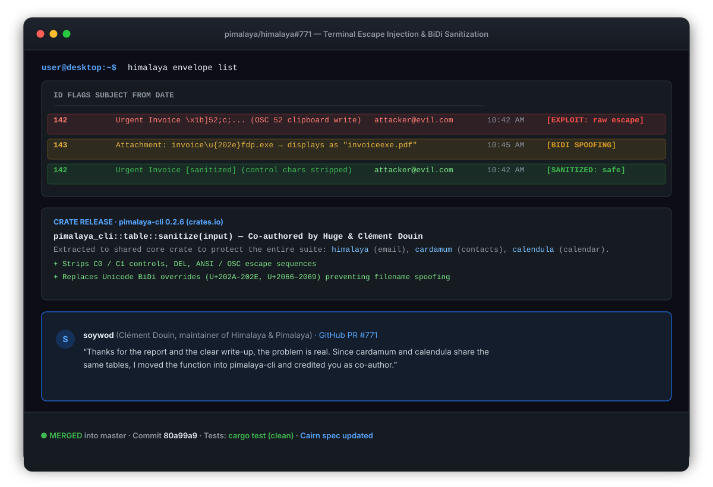

Začleněno 3. 10. 2026 Oprava přesunutá do sdílené knihovny Pimalaya
Himalaya: ochrana před terminal injection a BiDi spoofingem v Rust tabulkách e-mailů
BudgetScan odhalil, že Himalaya, populární CLI e-mailový klient napsaný v Rustu, vypisoval neošetřená metadata zpráv — předměty, jména odesílatelů, názvy příloh a ID — přímo do tabulek terminálu. Útočník mohl v e-mailu podstrčit ANSI escape sekvence (jako neoprávněný zápis do systémové schránky přes OSC 52, mazání obrazovky a přepisování řádků) nebo Unicode BiDi override znaky k maskování přípon spustitelných souborů. Správce projektu Clément Douin (soywod) problém potvrdil, naši sanitizační logiku vyčlenil do centrální knihovny pimalaya-cli, uvedl Martina Vlacha jako spoluautora a zpřístupnil ji i sesterským CLI nástrojům cardamum a calendula, které sdílejí stejné tabulky.
Co bylo špatně
Když uživatel vypisuje seznam zpráv (himalaya envelope list) nebo prohlíží přílohy, formátuje Himalaya tato metadata do přehledných terminálových tabulek. Protože tato data pocházejí z nedůvěryhodných vnějších zdrojů — odesílatel e-mailu má plnou kontrolu nad předmětem, jménem odesílatele i názvy souborů — jejich přímý výpis bez ošetření do emulátoru terminálu představuje vážná bezpečnostní rizika:
- OSC 52 Clipboard Hijacking: Terminály podporující sekvenci OSC 52 (
\x1b]52;c;...) lze instruovat k tichému přepsání systémové schránky uživatele při pouhém zobrazení seznamu zpráv. - BiDi (Bidirectional) Override Spoofing: Odesílatel mohl do názvu přílohy vložit řídicí znaky pro změnu směru textu (např.
\u{202E}Right-to-Left Override). Nebezpečný spustitelný souborinvoice\u{202e}fdp.exese v terminálu uživateli zobrazil jako zdánlivě neškodnýinvoiceexe.pdf, což jej mohlo oklamat k otevření škodlivého kódu. - Manipulace s terminálem a podvržení výstupu: ANSI escape kódy pro smazání obrazovky (
\x1b[2J), posun kurzoru či změny barev (SGR) mohly vymazat historii příkazů, skrýt část výpisu nebo podvrhnout falešnou příkazovou řádku. - Neúplná binární kontrola: Dosavadní filtr binárních výstupů nezachycoval znak DEL (
0x7F) ani kontrolní bajty C1 (0x80..=0x9F).

pimalaya-cli 0.2.6 a zhodnocení správce Clémenta Douina.Jak to bylo opraveno
Odeslali jsme pull request #771 s návrhem sanitizační funkce a automatickými testy. Správce projektu Clément Douin (soywod) rozpoznal, že příbuzné nástroje z rodiny Pimalaya (cardamum pro kontakty a calendula pro kalendář) sdílejí stejnou logiku vykreslování tabulek:
„Thanks for the report and the clear write-up, the problem is real. Since cardamum and calendula share the same tables, I moved the function into pimalaya-cli and credited you as co-author. It's released in 0.2.6 as pimalaya_cli::table::sanitize. It's your printable(), with one addition: it also replaces bidi controls (U+202A–202E, U+2066–2069). Without that, a filename like invoice\u{202e}fdp.exe displays as invoiceexe.pdf.“
V návaznosti na doporučení správce jsme v PR dokončili implementaci:
- Povýšili jsme knihovnu
pimalaya-clina verzi 0.2.6 a napojili jednořádková pole napříč backendy IMAP, JMAP, Gmail, Graph a pimdir na funkcipimalaya_cli::table::sanitize. - Upravili jsme binární kontrolu ve
write_bytes_or_savevoutput.rs, aby odmítala řídicí bajty DEL a C1 na terminálu, přičemž ne-UTF-8 bajty interpretuje jako Latin-1, aby nedošlo k záměně s UTF-8 continuation bajty. - Přidali jsme jednotkové testy ověřující bezpečné vykreslení tabulek s řetězci obsahujícími OSC 52, SGR, mazání obrazovky i BiDi override znaky.
- Aktualizovali jsme specifikaci CLI rozhraní Cairn (
cairn/spec/commands.md) o požadavek na sanitizaci jednořádkových metadatových polí.
Správce Clément Douin změny ověřil a 3. října 2026 pull request začlenil do větve master:
„Thanks, all good. The Windows-1252 side effect is fine for now; we'll revisit if it turns out to bite. Merging.“
Časová osa
- 2. 10. 2026. BudgetScan odhalil neošetřená metadata ve výstupu tabulek Himalaya. Otevřeli jsme pull request #771 s návrhem opravy a sadou testů.
- 2. 10. Správce Clément Douin zranitelnost potvrdil, vyčlenil sanitizační logiku do sdílené knihovny
pimalaya-cli0.2.6 s ošetřením BiDi znaků a uvedl Martina Vlacha jako spoluautora. - 3. 10. Doplnili jsme PR o novou verzi knihovny, pokryli všechny backendové výstupy a aktualizovali specifikaci. Správce Douin PR zkontroloval a začlenil do hlavní větve.
Jak to číst
Automatizované skenování zachytilo subtilní mezeru v sanitizaci vstupů pro terminál a díky otevřené spolupráci se zkušeným správcem vznikla sdílená funkce, kterou mohou převzít i další CLI nástroje Pimalaya. Přesně takhle vypadá open-source bezpečnost v nejlepší formě: automatizovaná detekce přináší jasné podněty, po nichž následuje pečlivá lidská revize, důkladné testy a systémové zodolnění. Velké poděkování patří Clémentu Douinovi za příkladné vedení projektu a rychlou reakci.